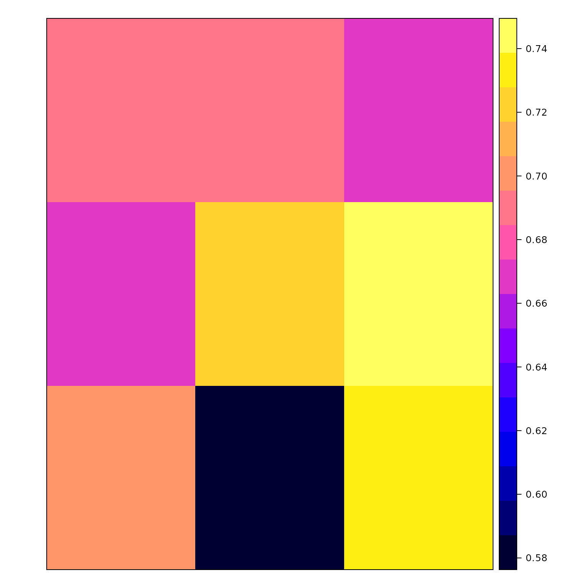

zeta_tiles.RmdThis vignette showcases the functions used to derive the roughness and anisotropy exponents for a collection of tiles over a landscape.
First, we perform all the steps from this vignette.
library("statisticalRoughness")First, we load one of the DEM.
rstr <- raster::raster(file.path(system.file("extdata/rasters/", package = "statisticalRoughness"), "gabilan_mesa.tif"))
raster_resolution <- 10Next we create tiles over which we will calculate the roughness and anisotropy exponents. This is done for simplicity here by using raster::aggregate().
tiles <- raster::aggregate(rstr, fact = 100)Then, get_zeta_df() basically checks, conversions and parallelization to be able to efficiently run get_zeta(). It is also possible to directly to pass a polygon to get_zeta_df(). If passing a raster, the conversion from raster to polygons is handled internally.
zeta_df <- get_zeta_df(
rstr, tiles,
raster_resolution, vertical_accuracy = 1.87
)get_zeta_df() returns a data.frame with no spatial information. get_zeta_raster() takes care to re-introduce the spatial information from the initial raster (here, rstr) and from the tiles. If the .zeta_df argument is set to NULL, get_zeta_raster() first runs get_zeta()
zeta_raster <- get_zeta_raster(
rstr, tiles,
.zeta_df = zeta_df, raster_resolution, vertical_accuracy = 1.87
)For example here are the raster layers corresponding to \(\alpha_{1,x}\) and \(\alpha_{1,y}\).
